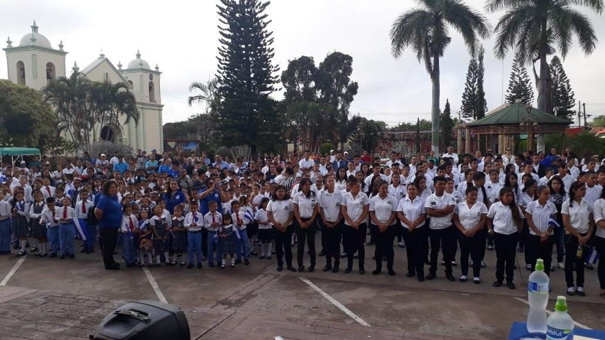

Reseña Historica
Reseña Historica Institucional
El 21 de julio de 1968, la profesora Tomasa Maradiaga de Paz, convoco a una asamblea general de
padres de familia y comunidad en general. En donde se eligio la directiva profundacion del Instituto
de la Villa San Antonio, quienes visitaron diferentes entidades para pedir el proyecto de la creacion del Centro
Educativo, que le dieron por nombre ´´ Superacion del Valle¨, cuyo significado era abrir nuevoas horizontes a la
juventud con deseos de superacion.
En septiembre del mismo año se presenta la solicitud de apertura al Ministerio de Educacion Publica. Luego el 11
de septiembre se obtuvo el acuerdo de apertura No.4088-EP. Dirigio al señor Celestino Velasquez Presidente de la
Asociacion de padres de familia.
Siendo el gran logro, de que el municipio de la Villa de San Antonio, ya iba a contar con un Centro Educativo de
Educacion Media, se dio honor a la profesora Tomasa Maradiaga de Paz siendo la primera Directora. En sus inicios
el " Superacion del valle ", conto con nueve docentes y tres personas de servicio civil, en el mes de febrero de
1969 se apertura las clases con un acto presidio por la Directora.
El Institucion comienza a funcionar con un acuerdo acuerdo provisional de caracter privado, en el primer año el
aadquiere su propio edificio que fue comprado por la Sra. Artina Rodríguez por L 4,000.00 (préstamo de FACACH)
pagado por los padres de familia, aportado L.1.00 mensual por cada alumno. En 1974 el Instituto se vuelve semi-oficial.
El 02 de octubre de 1980 se inaugura la primera etapa de construcción acordado en la reunión de maestros, ya
en 1983 se finaliza la construcción del edificio con ayuda del Presidente de la Republica Roberto Suazo Córdova.
En 1986 se convierte en un Instituto oficial, y en 1990 se ilumina la biblioteca, en 1992 se solicita la apertura
de la jornada nocturna.
Actualmente funcionan dos jornadas diurna y nocturna atendiendo Ciclo Básico Técnico, Bachillerato Científico
humanista, Bachillerato Técnico en Informática y Bachillerato Técnico Profesional en Administración y Finanzas.
